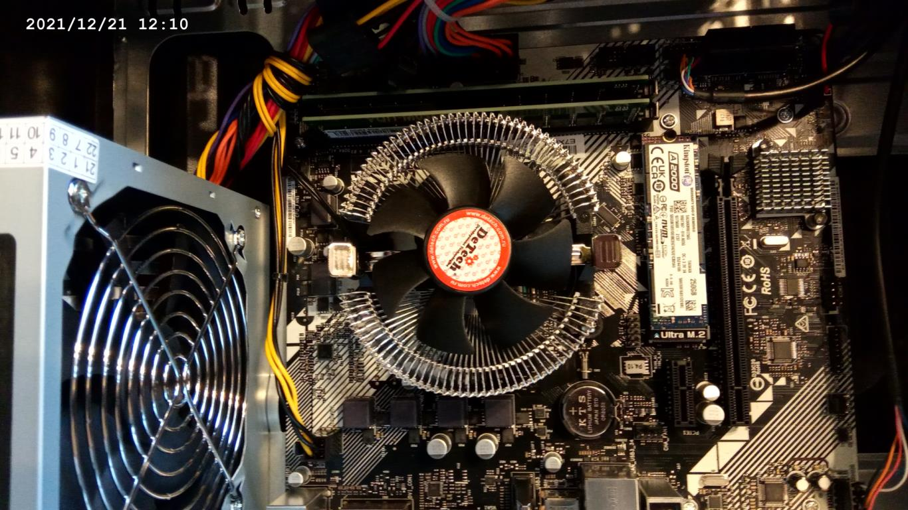
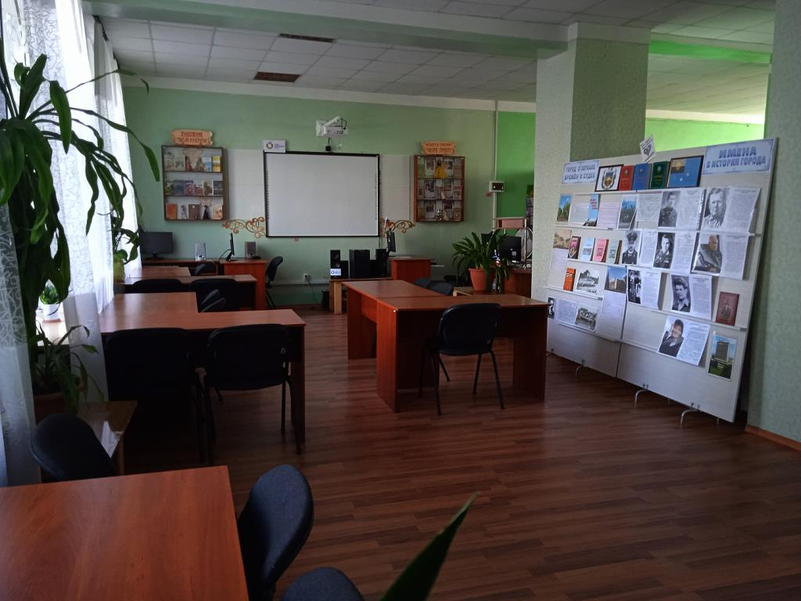

Принтер, он же гроб из ГДР. Размер (Альбомный A3), вес (9кг), устройство крышки и надежность аналогичны прототипу. С учетом того, что завод развалился вместе с республикой, ему не меньше 33 лет

Внутренности. В головке иглы установлены в 2 столбца, что значительно повышает срок службы
Первый тест после переборки и замены ленты. Текстовый режим, однопроходная печать
|
|

Системный блок (1/2), поставленный в библиотеку им. Горького. Первый ПК с 2012 года. Не фонтан, но даренному коню в зубы не смотрят
Двор
Главный вход
Холл и гардеробная

Читальный зал. Интерактивная доска куплена по проекту на грант из Югры. Техника подобрана мною по списку
|